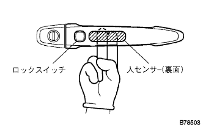

スマートドアアンロツク機能点検
ワイヤレスドアロツク操作による全ドアロツク状態でスマート携帯機を携帯しているとき、フロントドアアウトサイドハンドルASSY RH(人センサ)を握ると全ドアがアンロツク作動することを点検する。
スマートドアアンロツク作動範囲点検は、スマート携帯機をフロントドアアウトサイドハンドルASSY RHと同じ高さ(地上高約80ｃｍ)で図の方向に持ったとき車両から70ｃｍ以内の位置でアンロツクモード[スマート携帯機のLED(赤色)が点滅する]になることを点検する。
アンロツクモードの状態から3秒以内にフロントドアアウトサイドハンドルASSY RHを握り、アンロツク作動することを点検する。
- ■ 注 意 ■
- フロントドアアウトサイドハンドルASSY RHから20ｃｍ以内は通信不可能な範囲となる。
ドアエレクトリカルオキシレータキー(人センサ)応答感度点検は、手に軍手を着用しアンロツクモード状態のとき、人さし指で図の範囲内を触れるとアンロツク作動することを点検する。
- ■ 注 意 ■
- 指を触れる速さが速すぎるまたは遅すぎると人センサが反応せず、アンロツク作動しない場合がある。
 |
|  |
スマートドアロツク機能点検
全ドアが閉(アンロツク状態)でスマート携帯機を車外に持ち出しているとき、フロントドアアウトサイドハンドルASSY RH部のトリガスイッチを押すと全ドアがロツク作動することを点検する。
スマートドアアンロツク作動範囲の点検は、スマート携帯機をドアガラス下端から下方へ10ｃｍ(地上高約1ｍ)の高さで図の方向に持ち、車両から約20ｃｍ離した位置でトリガスイッチを押したとき全ドアロツク作動することを点検する。
- ■ 注 意 ■
- フロントドアアウトサイドハンドルASSY RH付近(20ｃｍ以内)では通信不可能な範囲となるため、スマート携帯機を持っている手でトリガスイッチを押した場合はロツクできない。
 |
ハザード点滅(アンサーバック)機能点検
| スマート操作 | ハザード点滅 |
|---|---|
| スマートドアロツク | 1回 |
| スマートドアアンロツク | 2回 |